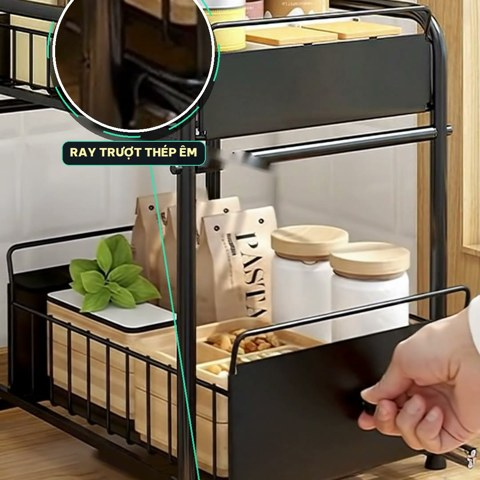

2-Tier Sliding Under-Sink Organizer: Maximize Cabinet Space
Tired of digging through the 'dark abyss' under your sink to find a single cleaning spray? This 2-tier sliding drawer system brings your essentials to the forefront with a smooth, heavy-duty pull-out mechanism.
The Ultimate Solution for Deep Cabinet Clutter
Most standard US and EU kitchen cabinets are deep, making the space under the sink difficult to utilize effectively. Items get pushed to the back and forgotten. This 2-tier organizer (Model #07) solves this by utilizing vertical space and providing easy access via smooth-gliding drawers.
- Heavy-Duty Build: Constructed from high-grade powder-coated steel, it supports up to 25kg (approx. 55lbs) without sagging.
- Rust-Resistant Finish: The matte coating is designed to withstand the humid environments typically found under sinks or near bathroom vanities.
- Stable Footing: Designed to stay in place even when drawers are fully extended, preventing tips and spills.
Sizing and Installation Tips for Modern Homes
Before purchasing, it is crucial to measure your cabinet clearance. While this unit is compact, you should account for plumbing pipes and garbage disposals. We recommend leaving at least 1-2 inches of clearance on either side for the smoothest operation.
Installation is generally tool-free, making it an ideal choice for renters who want to upgrade their organization without damaging cabinetry. The minimalist aesthetic fits perfectly into modern, industrial, or Scandinavian-style interiors.
Beyond the Kitchen: Versatile Vanity Storage
While marketed for the kitchen, this sliding rack is a game-changer for bathroom vanities. It perfectly accommodates tall hairspray bottles, skincare bins, and cleaning supplies. The two-tier design allows you to categorize items—daily essentials on top and bulkier refills on the bottom.
Pros
- ✅ High load capacity (up to 55lbs/25kg) for heavy detergents
- ✅ Smooth sliding mechanism for easy access to back-of-cabinet items
- ✅ Durable powder-coated steel resists moisture and wear
- ✅ Tool-free assembly is perfect for renters and DIYers
Cons & Checkpoints
- ⚠️ Fixed height may not clear very low-hanging plumbing P-traps
- ⚠️ Requires a flat cabinet base for maximum sliding stability
FAQ
Will this fit around my garbage disposal?
This depends on your disposal's width. We recommend measuring the space to the left or right of your disposal unit; this slim 2-tier design is often placed on one side to maximize the remaining vertical gap.
Is the material rust-proof?
The steel is finished with a high-quality powder coating which provides excellent water resistance and rust protection under normal household use.
Does the bottom drawer slide out independently?
Yes, both tiers are designed to slide smoothly, allowing you to reach items at the back of either level without moving the entire unit.